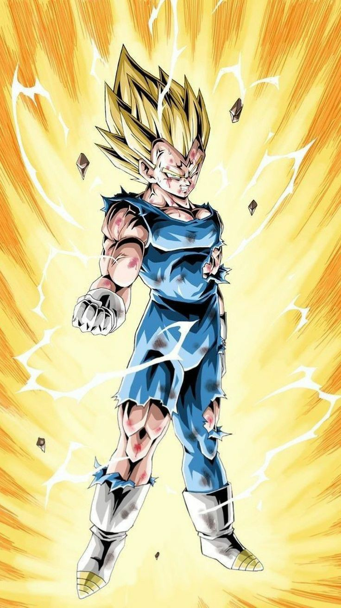
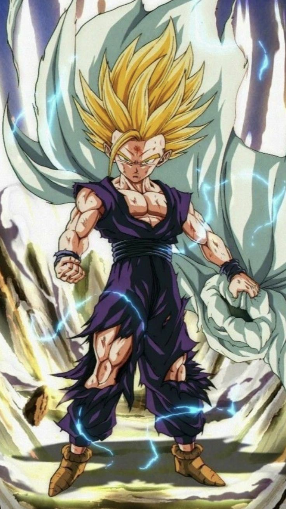

### أنمي دراغون بول (Dragon Ball): *دراغون بول* هو أحد أشهر الأنميات في العالم، ويبدأ بقصة صبي يدعى سون غوكو، الذي يمتلك قوة هائلة رغم مظهره الصغير. غوكو يذهب في مغامرات للبحث عن الكرات السبع السحرية المعروفة بـ"كرات التنين"، التي يمكنها تحقيق أي أمنية. القصة تتطور ليصبح غوكو مقاتلًا بارعًا يدافع عن الأرض ضد الأعداء الأشرار الذين يهددونها. مع تقدم السلسلة، يتعلم غوكو تقنيات قتالية متقدمة مثل "الكاميهاميها"، ويواجه مقاتلين أقوياء مثل فريزا وسيل وماجين بو. الأنمي يمزج بين القتال، الكوميديا، والدراما مع تركيز على التضحية والنمو الشخصي.
سون غوكو هو محارب من فصيلة السايان يسعى دائمًا للتدريب ليصبح أقوى ويحمي كوكب الأرض.
فيجيتا هو أمير السايان وخصم غوكو الذي يسعى دائمًا لتجاوزه في القوة.
غوهان هو ابن غوكو ويظهر قدرات قتالية مذهلة على الرغم من حبه للدراسة.
العودة إلى الصفحة الرئيسية